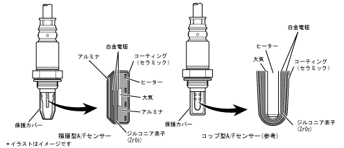

| A/Fセンサー(Air-Fuel Ratio Sensor） |
| ● |
排気ガス中から，空燃比の状態を確実にフィードバックするためにA/Fセンサー（クウネンヒセンサ）を採用しました。センサーの早期活性化を促進するために積層型のセンサー構造とし，エンジン始動早期からの空燃比フィードバック制御を実現しました。
|
| ● |
A/Fセンサー（クウネンヒセンサ）は理論空燃比を境にリーンまたはリッチ信号を出力するO2センサー（オキシジエンセンサ）に対して，空燃比に比例した出力特性を持つため，エンジンコントロールコンピューターはより詳細な空燃比制御を行えます。
|
| ● |
A/Fセンサー（クウネンヒセンサ）を活性化させるためには，センサー（ジルコニア素子）を加熱する必要があります。コップ型センサーは大気層を介した間接加熱のため，活性化に時間を要するのに対し，積層型センサーはジルコニア素子を直接加熱することで，センサーの活性時間の短縮を実現しました。また，ジルコニア素子の小型化により，ヒートマスの低減を実現しています。
|
| ● |
搭載位置は，三元触媒上流のエキゾーストマニホールド部としました。
|
|  |
 A/FセンサーとO2センサーの特性 A/FセンサーとO2センサーの特性
|